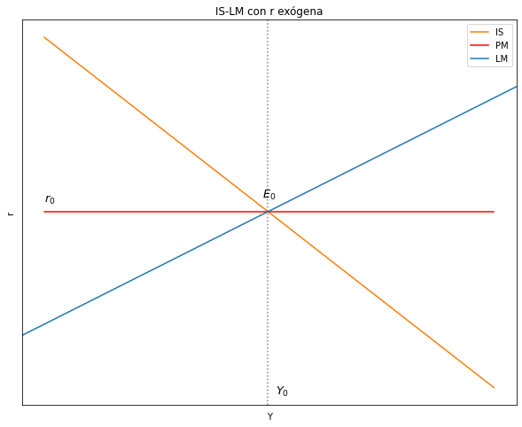
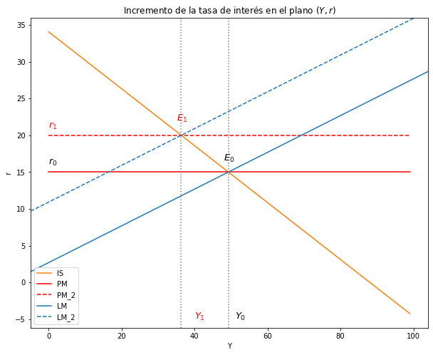

6. Modelo IS-LM con Tasa de Interés Exógena (r) fijada por el Banco Central:
Contents
%matplotlib widget
%matplotlib inline
import ipywidgets as widgets
import matplotlib.pyplot as plt
import numpy as np
import sympy as sy
from sympy import *
import pandas as pd
#from causalgraphicalmodels import CausalGraphicalModel
from IPython.display import Image
import warnings
warnings.filterwarnings('ignore')
---------------------------------------------------------------------------
ModuleNotFoundError Traceback (most recent call last)
~\AppData\Local\Temp/ipykernel_4788/1386330301.py in <module>
----> 1 get_ipython().run_line_magic('matplotlib', 'widget')
2 get_ipython().run_line_magic('matplotlib', 'inline')
3 import ipywidgets as widgets
4 import matplotlib.pyplot as plt
5 import numpy as np
~\anaconda3\envs\renv\lib\site-packages\IPython\core\interactiveshell.py in run_line_magic(self, magic_name, line, _stack_depth)
2362 kwargs['local_ns'] = self.get_local_scope(stack_depth)
2363 with self.builtin_trap:
-> 2364 result = fn(*args, **kwargs)
2365 return result
2366
~\anaconda3\envs\renv\lib\site-packages\decorator.py in fun(*args, **kw)
230 if not kwsyntax:
231 args, kw = fix(args, kw, sig)
--> 232 return caller(func, *(extras + args), **kw)
233 fun.__name__ = func.__name__
234 fun.__doc__ = func.__doc__
~\anaconda3\envs\renv\lib\site-packages\IPython\core\magic.py in <lambda>(f, *a, **k)
185 # but it's overkill for just that one bit of state.
186 def magic_deco(arg):
--> 187 call = lambda f, *a, **k: f(*a, **k)
188
189 if callable(arg):
~\anaconda3\envs\renv\lib\site-packages\IPython\core\magics\pylab.py in matplotlib(self, line)
97 print("Available matplotlib backends: %s" % backends_list)
98 else:
---> 99 gui, backend = self.shell.enable_matplotlib(args.gui.lower() if isinstance(args.gui, str) else args.gui)
100 self._show_matplotlib_backend(args.gui, backend)
101
~\anaconda3\envs\renv\lib\site-packages\IPython\core\interactiveshell.py in enable_matplotlib(self, gui)
3544 gui, backend = pt.find_gui_and_backend(self.pylab_gui_select)
3545
-> 3546 pt.activate_matplotlib(backend)
3547 configure_inline_support(self, backend)
3548
~\anaconda3\envs\renv\lib\site-packages\IPython\core\pylabtools.py in activate_matplotlib(backend)
357 from matplotlib import pyplot as plt
358
--> 359 plt.switch_backend(backend)
360
361 plt.show._needmain = False
~\anaconda3\envs\renv\lib\site-packages\matplotlib\pyplot.py in switch_backend(newbackend)
265 backend_name = cbook._backend_module_name(newbackend)
266
--> 267 class backend_mod(matplotlib.backend_bases._Backend):
268 locals().update(vars(importlib.import_module(backend_name)))
269
~\anaconda3\envs\renv\lib\site-packages\matplotlib\pyplot.py in backend_mod()
266
267 class backend_mod(matplotlib.backend_bases._Backend):
--> 268 locals().update(vars(importlib.import_module(backend_name)))
269
270 required_framework = _get_required_interactive_framework(backend_mod)
~\anaconda3\envs\renv\lib\importlib\__init__.py in import_module(name, package)
125 break
126 level += 1
--> 127 return _bootstrap._gcd_import(name[level:], package, level)
128
129
~\anaconda3\envs\renv\lib\importlib\_bootstrap.py in _gcd_import(name, package, level)
~\anaconda3\envs\renv\lib\importlib\_bootstrap.py in _find_and_load(name, import_)
~\anaconda3\envs\renv\lib\importlib\_bootstrap.py in _find_and_load_unlocked(name, import_)
~\anaconda3\envs\renv\lib\importlib\_bootstrap.py in _call_with_frames_removed(f, *args, **kwds)
~\anaconda3\envs\renv\lib\importlib\_bootstrap.py in _gcd_import(name, package, level)
~\anaconda3\envs\renv\lib\importlib\_bootstrap.py in _find_and_load(name, import_)
~\anaconda3\envs\renv\lib\importlib\_bootstrap.py in _find_and_load_unlocked(name, import_)
ModuleNotFoundError: No module named 'ipympl'
6. Modelo IS-LM con Tasa de Interés Exógena \((r)\) fijada por el Banco Central:¶
6.1. Ecuaciones¶
Ecuación de la IS:
Partiendo de:
\[ Y = C + I + G + X - M \]
donde
\[ C = C_0 + b(1-t)Y \]
\[ I = I_0 - hr \]
\[ G = G_0 \]
\[ X = X_0 \]
\[ M = mY \]
Reemplazando:
\[ Y = C_0 + b(1-t)Y + I_0 - hr + G_0 + X_0 - mY \]
La ecuación de la IS es en función de \(Y\) es:
\[ Y = \frac{1}{1 - (b - m)(1 - t)} (C_o + I_o + G_o + X_o - hr) \]
o,
\[ Y = \frac{1}{B_1} (B_0) \]
Donde \( B_0 = C_o + I_o + G_o + X_o - hr \) y \( B_1 = 1 - (b - m)(1 - t) \)
Ecuación de la LM:
\[ \frac{M_o^s}{P_0} = kY - jr \]
Ahora \(M^s\) es la variable endogena, por eso escribimos la LM En función de \((M^s)\):
\[ M^s = P_0(kY - jr) \]
6.2. Equilibrio IS-LM con \(r\) exógena¶
Ingreso de equilibrio: es igual a la ecuación de la IS
\[ Y^e = \frac{1}{1 - (b - m)(1 - t)} (C_o + I_o + G_o + X_o - hr) \]
Masa monetaria: reemplazamos \(Y\) en \(M_s\):
\[ M^e_s = P_0(kY - jr) \]
\[ M^e_s = (\frac{B_0}{B_1})P_0k - P_0jr \]
\[ M^e_s = P_0k(\frac{1}{1 - (b - m)(1 - t)} (C_o + I_o + G_o + X_o - hr)) - P_0jr \]
6.3. Curva IS¶
#--------------------------------------------------
# Curva IS
r_size = 100
Co = 13
b = 0.7
t = 0.25
Io = 6.4
Go = 5
h = 0.3
Xo = 2
m = 0.4
r = np.arange(r_size)
# Ecuación
def IS_CB(Co, b, t, Io, h, Xo, m, Go):
IS_CB = (1/(1 - (b - m)*(1 - t)))*(Co + Io + Go + Xo - h*r)
return IS_CB
IS_CB = IS_CB(Co, b, t, Io, h, Xo, m, Go)
6.4.Curva LM¶
#--------------------------------------------------
# Curva LM
# Parámetros
Y_size = 100
P = 3.5
k = 1.76
j = 3
r = 15
Y = np.arange(Y_size)
# Ecuación
def LM_CB(Y, P, k, j, r):
LM_CB = P*(k*Y - j*r)
return LM_CB
LM_CB = LM_CB(Y, P, k, j, r)
6.5. Funcion para encontrar el cruce de rectas¶
# líneas punteadas autómaticas
# definir la función line_intersection
def line_intersection(line1, line2):
xdiff = (line1[0][0] - line1[1][0], line2[0][0] - line2[1][0])
ydiff = (line1[0][1] - line1[1][1], line2[0][1] - line2[1][1])
def det(a, b):
return a[0] * b[1] - a[1] * b[0]
div = det(xdiff, ydiff)
if div == 0:
raise Exception('lines do not intersect')
d = (det(*line1), det(*line2))
x = det(d, xdiff) / div
y = det(d, ydiff) / div
return x, y
Encontrar puntos de cruce¶
r_ec = np.full((100), 15)
# coordenadas de las curvas (x,y)
A = [IS_CB[0], Y[0]] # DA, coordenada inicio
B = [IS_CB[-1], Y[-1]] # DA, coordenada fin
C = [r_ec[0], Y[0]] # L_45, coordenada inicio
D = [r_ec[-1], Y[-1]] # L_45, coordenada fin
# creación de intersección
intersec_1 = line_intersection((A, B), (C, D))
intersec_1 # (y,x)
(15.000000000000002, 49.25)
6.6. Gráfico del modelo IS-LM-PM¶
# Gráfico del modelo IS-PM
# Dimensiones del gráfico
y_max = np.max(Y)
fig, ax = plt.subplots(figsize=(10, 8))
# Curvas a graficar
ax.plot(IS_CB, label = "IS", color = "C1") #IS
ax.plot(r_ec, color = "red", label ="PM") #r: tasa de interés
plt.axvline(intersec_1[1], ymin= 0, ymax= 1, linestyle = ":", color = "grey")
plt.axline((intersec_1[1], intersec_1[0]), slope=0.25, color="C0", label = 'LM')
ax.yaxis.set_major_locator(plt.NullLocator())
ax.xaxis.set_major_locator(plt.NullLocator())
ax.text(0, 16, '$r_0$', fontsize = 13, color = 'black')
ax.text(51, -5, '$Y_0$', fontsize = 13, color = 'black')
ax.text(48, 16.5, '$E_0$', fontsize = 13, color = 'black')
ax.set(title="IS-LM con r exógena", xlabel= 'Y', ylabel= 'r')
ax.legend()
plt.show()

6.7. Estática comparativa¶
# nombrar variables como símbolos
Co, Io, Go, Xo, h, b, m, t, P, k, j, r, beta_0, beta_1 = symbols('Co, Io, Go, Xo, h, b, m, t, P, k, j, r, beta_0, beta_1')
# # Beta_0 y beta_1
# beta_0 = (Co + Io + Go + Xo - h*r)
# beta_1 = (1-(b-m)*(1-t))
# Producto de equilibrio y la tasa de interes de equilibrio en el modelo IS-LM
Y_eq = (Co + Io + Go + Xo - h*r/(1-(b-m)*(1-t)))
Ms_eq = (Co + Io + Go + Xo - h*r/(1-(b-m)*(1-t)))*(P*k) - (P*j*r)
6.7.1. Incremento tasa de interés \((r)\)¶
Matemática:
df_Y_eq_r = diff(Y_eq, r)
print("El Diferencial del Producto con respecto al diferencial de la tasa de interés = ", df_Y_eq_r)
El Diferencial del Producto con respecto al diferencial de la tasa de interés = -h/(-(1 - t)*(b - m) + 1)
¿\(∆Y\) sabiendo que \(∆r > 0\)?
\[ \frac{∆Y}{∆r} = (-) \]
\[ \frac{∆Y}{(+)} = (-) \]
\[ ∆Y = (-) \]
df_Ms_eq_r = diff(Ms_eq, r)
print("El Diferencial de la Masa Monetaria con respecto al diferencial de la tasa de interés = ", df_Ms_eq_r)
El Diferencial de la Masa Monetaria con respecto al diferencial de la tasa de interés = -P*h*k/(-(1 - t)*(b - m) + 1) - P*j
¿\(∆M^s\) sabiendo que \(∆r > 0\)?
\[ \frac{∆M^s}{∆r} = (-) \]
\[ \frac{∆M^s}{(+)} = (-) \]
\[ ∆M^s = (-) \]
Intuición:
\[ r↑ → I↓ → DA↓ → DA < Y → Y↓ \]
\[ r↑ → M^d<M^s → M^s↓ \]
Gráfico:
#--------------------------------------------------
# Curva IS
r_size = 100
Co = 13
b = 0.7
t = 0.25
Io = 6.4
Go = 5
h = 0.3
Xo = 2
m = 0.4
r = np.arange(r_size)
# Ecuación
def IS_CB(Co, b, t, Io, h, Xo, m, Go):
IS_CB = (1/(1 - (b - m)*(1 - t)))*(Co + Io + Go + Xo - h*r)
return IS_CB
IS_CB = IS_CB(Co, b, t, Io, h, Xo, m, Go)
#--------------------------------------------------
# Curva LM
# Parámetros
Y_size = 100
P = 3.5
k = 1.76
j = 3
r = 15
Y = np.arange(Y_size)
# Ecuación
def LM_CB(Y, P, k, j, r):
LM_CB = P*(k*Y - j*r)
return LM_CB
LM_CB = LM_CB(Y, P, k, j, r)
#---------------------------------------------------
# Nueva LM
r = 20
def LM_CB_2(Y, P, k, j, r):
LM_CB_2 = P*(k*Y - j*r)
return LM_CB_2
LM_CB_2 = LM_CB_2(Y, P, k, j, r)
r_ec = np.full((100), 15)
# coordenadas de las curvas (x,y)
A = [IS_CB[0], Y[0]] # DA, coordenada inicio
B = [IS_CB[-1], Y[-1]] # DA, coordenada fin
C = [r_ec[0], Y[0]] # L_45, coordenada inicio
D = [r_ec[-1], Y[-1]] # L_45, coordenada fin
# creación de intersección
intersec_1 = line_intersection((A, B), (C, D))
intersec_1 # (y,x)
(15.000000000000002, 49.25)
r_ec_2 = np.full((100), 20)
# coordenadas de las curvas (x,y)
A = [IS_CB[0], Y[0]] # DA, coordenada inicio
B = [IS_CB[-1], Y[-1]] # DA, coordenada fin
C = [r_ec_2[0], Y[0]] # L_45, coordenada inicio
D = [r_ec_2[-1], Y[-1]] # L_45, coordenada fin
# creación de intersección
intersec_2 = line_intersection((A, B), (C, D))
intersec_2 # (y,x)
(20.0, 36.333333333333336)
# Gráfico del modelo IS-PM
# Dimensiones del gráfico
y_max = np.max(Y)
fig, ax = plt.subplots(figsize=(10, 8))
# Curvas a graficar
ax.plot(IS_CB, label = "IS", color = "C1") #IS
ax.plot(r_ec, color = "red", label ="PM") #r: tasa de interés
ax.plot(r_ec_2, color = "red", label ="PM_2", linestyle = 'dashed') #r: tasa de interés
plt.axline((intersec_1[1], intersec_1[0]), slope=0.25, color="C0", label = 'LM')
plt.axline((intersec_2[1], intersec_2[0]), slope=0.25, color="C0", label = 'LM_2', linestyle = 'dashed')
plt.axvline(x=intersec_1[1], ymin= 0, ymax= 1, linestyle = ":", color = "grey")
plt.axvline(x=intersec_2[1], ymin= 0, ymax= 1, linestyle = ":", color = "grey")
ax.text(0, 16, '$r_0$', fontsize = 13, color = 'black')
ax.text(51, -5, '$Y_0$', fontsize = 13, color = 'black')
ax.text(48, 16.5, '$E_0$', fontsize = 13, color = 'black')
ax.text(0, 21, '$r_1$', fontsize = 13, color = 'red')
ax.text(40, -5, '$Y_1$', fontsize = 13, color = 'red')
ax.text(35, 22, '$E_1$', fontsize = 13, color = 'red')
ax.set(title="Incremento de la tasa de interés en el plano $(Y, r)$", xlabel= 'Y', ylabel= 'r')
ax.legend()
plt.show()

# # Gráfico del modelo IS-PM
# # Dimensiones del gráfico
# y_max = np.max(Y)
# fig, ax = plt.subplots(figsize=(10, 8))
# # Curvas a graficar
# ax.plot(LM_CB, label = "LM", color = "C0") #LM
# plt.axvline(x=intersec_1[1], ymin= 0, ymax= 1, color = "C8", label = 'YY')
# plt.axvline(x=intersec_2[1], ymin= 0, ymax= 1, color = "C8", label = 'YY_t', linestyle = 'dashed')
# plt.axhline(y=145, xmin= 0, xmax= 0.5, color = "grey", linestyle = ':')
# plt.axhline(y=65, xmin= 0, xmax= 0.38, color = "grey", linestyle = ':')
# ax.text(0, 160, '$m_0^s$', fontsize = 13, color = 'black')
# ax.text(51, -155, '$Y_0$', fontsize = 13, color = 'black')
# ax.text(0, 75, '$m_1^s$', fontsize = 13, color = 'C8')
# ax.text(38, -155, '$Y_1$', fontsize = 13, color = 'C8')
# ax.yaxis.set_major_locator(plt.NullLocator())
# ax.xaxis.set_major_locator(plt.NullLocator())
# ax.set(title="Incremento de la tasa de interés en el plano $(Y, m)$", xlabel= 'Y', ylabel= '$m^s$')
# ax.legend()
# plt.show()
# # Dos gráficos en un solo cuadro
# fig, (ax1, ax2) = plt.subplots(2, figsize=(8, 16))
# #---------------------------------
# # IS_PM
# # Curvas a graficar
# ax1.plot(IS_CB, label = "IS", color = "C1") #IS
# ax1.plot(r_ec, color = "red", label ="PM") #r: tasa de interés
# ax1.plot(r_ec_2, color = "red", label ="PM_2", linestyle = 'dashed') #r: tasa de interés
# ax1.axline((intersec_1[1], intersec_1[0]), slope=0.25, color="C0", label = 'LM')
# ax1.axline((intersec_2[1], intersec_2[0]), slope=0.25, color="C0", label = 'LM_2', linestyle = 'dashed')
# ax1.axvline(x=intersec_1[1], ymin= 0, ymax= 1, linestyle = ":", color = "grey")
# ax1.axvline(x=intersec_2[1], ymin= 0, ymax= 1, linestyle = ":", color = "grey")
# ax1.text(0, 16, '$r_0$', fontsize = 13, color = 'black')
# ax1.text(51, -5, '$Y_0$', fontsize = 13, color = 'black')
# ax1.text(48, 16.5, '$E_0$', fontsize = 13, color = 'black')
# ax1.text(0, 21, '$r_1$', fontsize = 13, color = 'red')
# ax1.text(40, -5, '$Y_1$', fontsize = 13, color = 'red')
# ax1.text(35, 22, '$E_1$', fontsize = 13, color = 'red')
# ax1.set(title="Incremento de la tasa de interés $(r)$", xlabel= 'Y', ylabel= 'r')
# ax1.legend()
# #---------------------------------
# # YY-MM
# ax2.plot(LM_CB, label = "LM", color = "C0") #LM
# ax2.axvline(x=intersec_1[1], ymin= 0, ymax= 1, color = "C8", label = 'YY')
# ax2.axvline(x=intersec_2[1], ymin= 0, ymax= 1, color = "C8", label = 'YY_t', linestyle = 'dashed')
# ax2.axhline(y=145, xmin= 0, xmax= 0.5, color = "grey", linestyle = ':')
# ax2.axhline(y=65, xmin= 0, xmax= 0.38, color = "grey", linestyle = ':')
# ax2.text(0, 160, '$m_0^s$', fontsize = 13, color = 'black')
# ax2.text(51, -155, '$Y_0$', fontsize = 13, color = 'black')
# ax2.text(0, 75, '$m_1^s$', fontsize = 13, color = 'C8')
# ax2.text(38, -155, '$Y_1$', fontsize = 13, color = 'C8')
# ax2.set(xlabel= 'Y', ylabel= '$m^s$')
# ax2.legend()
# plt.show()
# #--------------------------------------------------
# # Curva LM
# # Parámetros
# Y_size = 100
# P = 3.5
# k = 1.76
# j = 3
# r = 15
# Y = np.arange(Y_size)
# # Ecuación
# def LM_CB(Y, P, k, j, r):
# LM_CB = P*(k*Y - j*r)
# return LM_CB
# LM_CB = LM_CB(Y, P, k, j, r)
# # Gráfico del modelo IS-PM
# # Dimensiones del gráfico
# y_max = np.max(Y)
# fig, ax = plt.subplots(figsize=(10, 8))
# # Curvas a graficar
# ax.plot(LM_CB, label = "LM", color = "C0") #IS
# plt.axvline(x=intersec_1[1], ymin= 0, ymax= 1, color = "C8", label = 'YY')
# plt.axhline(y=145, xmin= 0, xmax= 0.5, color = "grey", linestyle = ':')
# ax.text(0, 160, '$m_0^s$', fontsize = 13, color = 'black')
# ax.text(51, -155, '$Y_0$', fontsize = 13, color = 'black')
# ax.text(45, 160, '$E_0$', fontsize = 13, color = 'black')
# ax.yaxis.set_major_locator(plt.NullLocator())
# ax.xaxis.set_major_locator(plt.NullLocator())
# ax.set(title="IS-LM con tasa de interés $(r)$ exógena en el plano $(Y, m)$", xlabel= 'Y', ylabel= '$m^s$')
# ax.legend()
# plt.show()
# # Dos gráficos en un solo cuadro
# fig, (ax1, ax2) = plt.subplots(2, figsize=(8, 16))
# #---------------------------------
# # IS_PM
# # Curvas a graficar
# ax1.plot(IS_CB, label = "IS", color = "C1") #IS
# ax1.plot(r_ec, color = "red", label ="PM") #r: tasa de interés
# ax1.axvline(intersec_1[1], ymin= 0, ymax= 1, linestyle = ":", color = "grey")
# ax1.axline((intersec_1[1], intersec_1[0]), slope=0.25, color="C0", label = 'LM')
# ax1.yaxis.set_major_locator(plt.NullLocator())
# ax1.xaxis.set_major_locator(plt.NullLocator())
# ax1.text(0, 16, '$r_0$', fontsize = 13, color = 'black')
# ax1.text(51, -5, '$Y_0$', fontsize = 13, color = 'black')
# ax1.text(48, 16.5, '$E_0$', fontsize = 13, color = 'black')
# ax1.set(title="IS-LM con r exógena", xlabel= 'Y', ylabel= 'r')
# ax1.legend()
# #---------------------------------
# # YY-MM
# ax2.plot(LM_CB, label = "MM", color = "C0") #IS
# ax2.axvline(x=intersec_1[1], ymin= 0, ymax= 1, color = "C8", label = 'YY')
# ax2.axhline(y=145, xmin= 0, xmax= 0.5, color = "grey", linestyle = ':')
# ax1.yaxis.set_major_locator(plt.NullLocator())
# ax1.xaxis.set_major_locator(plt.NullLocator())
# ax2.text(0, 160, '$m_0^s$', fontsize = 13, color = 'black')
# ax2.text(51, -155, '$Y_0$', fontsize = 13, color = 'black')
# ax2.set(xlabel= 'Y', ylabel= 'm')
# ax2.legend()
# plt.show()
# # nombrar variables como símbolos
# Co, Io, Go, Xo, h, b, m, t, P, k, j, r, beta_0, beta_1 = symbols('Co, Io, Go, Xo, h, b, m, t, P, k, j, r, beta_0, beta_1')
# # # Beta_0 y beta_1
# # beta_0 = (Co + Io + Go + Xo - h*r)
# # beta_1 = (1-(b-m)*(1-t))
# # Producto de equilibrio y la tasa de interes de equilibrio en el modelo IS-LM
# Y_eq = (Co + Io + Go + Xo - h*r/(1-(b-m)*(1-t)))
# Ms_eq = (Co + Io + Go + Xo - h*r/(1-(b-m)*(1-t)))*(P*k) - (P*j*r)